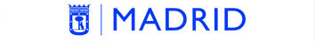

<mat-sidenav-container class="sidenav-container">
  <mat-sidenav #drawer class="sidenav" fixedInViewport="true" [attr.role]="isHandset ? 'dialog' : 'navigation'" [mode]="(isHandset | async)!.matches ? 'over' : 'side'"
    [opened]="!(isHandset | async)!.matches">
    <mat-toolbar class="back_color">
      
    </mat-toolbar>
    <mat-nav-list class="lat-color">
      <div class="user-zone">
        {{nombreUsuario}}
        <hr /> {{centro}}
      </div>
      <div class="link-zone">
        <ul>
          <li [ngClass]="{'is_active': isActive ==='convenios' , 'not_active': isActive !=='convenios' }" (click)="showModel('convenios')"
            routerLink="/">
            {{'nav_bar.convenios' | translate}}
          </li>
          <li [ngClass]="{'is_active': isActive ==='parcels' , 'not_active': isActive !=='parcels' }" (click)="showModel('parcels')"
            routerLink="/parcels">
            {{'nav_bar.encomiendas' | translate}}
          </li>
          <li [ngClass]="{'is_active': isActive ==='decrees' , 'not_active': isActive !=='decrees' }" (click)="showModel('decrees')"
            routerLink="/decrees">
            {{'nav_bar.decretos_resoluciones' | translate}}
          </li>
        </ul>
      </div>
    </mat-nav-list>
  </mat-sidenav>
  <mat-sidenav-content>

      <button type="button" aria-label="Toggle sidenav" mat-icon-button (click)="drawer.toggle()" *ngIf="(isHandset | async)!.matches">
        <mat-icon aria-label="Side nav toggle icon">menu</mat-icon>
      </button>
    <router-outlet></router-outlet>
  </mat-sidenav-content>
</mat-sidenav-container>
